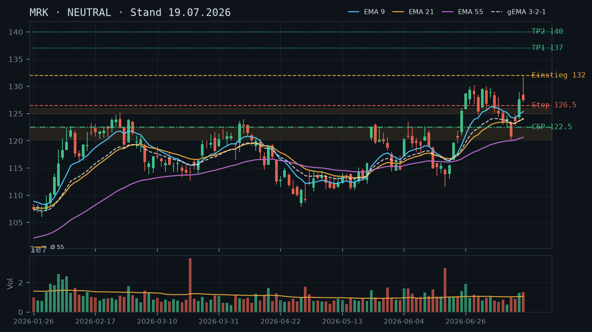
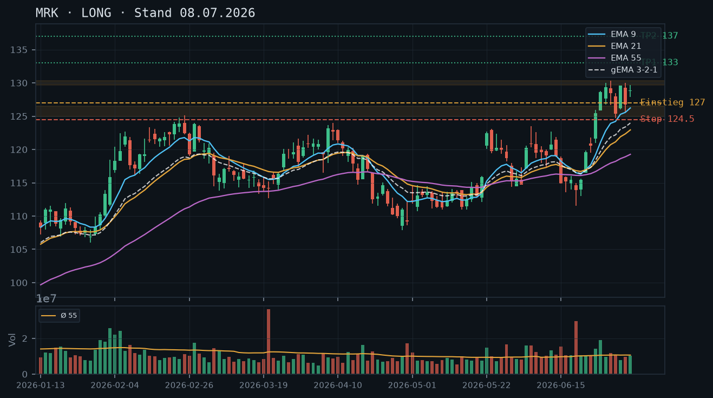

MRK
Analyse-Historie · neueste zuerstMRK hält nach dem Pullback vom Hoch (131,74) die bullische Struktur oberhalb EMA9/21 – der Trend ist intakt, ein frischer CSP auf technisch abgeleitetem Support bietet sich an.

1 · Trendstruktur
MRK befindet sich in einem intakten Aufwärtstrend seit dem Tief Mitte Juni (111,57 am 18.06.). Die Struktur zeigt eine klare Abfolge steigender Hochs und Tiefs: Swing-Hoch 131,74 (17.07.) → Pullback-Tief 124,10 (20.07.) → Erholung auf 127,47 (22.07.). Das Hoch vom 17.07. bildet aktuell den relevanten Widerstand; die Zone 124,00–125,00 fungiert als erste Unterstützung (mehrfache Tests am 09./10./20.07.). Der übergeordnete Trend bleibt klar bullisch, solange MRK oberhalb von 122,44 (Tief 13.07.) notiert.
2 · Candlestick-Formationen
Die letzten drei Kerzen zeigen eine konstruktive Konsolidierung: 20.07. Inside-Kerze mit leichtem Abgabedruck (rel. Volumen 0,73 – unterdurchschnittlich, kein Distribution-Signal), 21.07. Erholung mit höherem Hoch und höherem Tief (bullisches Follow-Through), 22.07. erneut höheres Hoch (128,83) und höheres Tief (126,62) bei moderatem Volumen (rel. Volumen 0,76). Das Muster entspricht einer geordneten Bull-Flag-Konsolidierung nach dem starken Run am 16./17.07.
3 · EMA-Lage (9 / 21 / 55)
Die EMA-Struktur ist eindeutig bullisch: EMA9 (125,82) > EMA21 (124,53) > EMA55 (121,23); gema_321 bei 124,62 und steigend. Alle drei EMAs verlaufen aufwärts geneigt und fächern auf – ein gesundes Bild. Der aktuelle Kurs (127,47/127,69 laut IBKR) liegt komfortabel ca. 1,5 % über EMA9 und ca. 5,3 % über EMA55. Keine Kompressions-Artefakte, keine ungewöhnliche Reihenfolge – reine Trendkonfirmation.
4 · Trade-Setup
| Richtung | Long |
| Einstieg | 128.84 (Stop-Buy über Tageshoch 22.07. bei 128,83 – Breakout-Bestätigung) |
| Stop | 124.00 (unter Support-Zone 124,00–125,00 und EMA9) |
| Ziel | 135.00 (gemessene Bewegung aus der Konsolidierung; nächster struktureller Widerstand) |
| CRV | 2.8 : 1 |
5 · Stillhalter (max. 12 Tage)
Die bullische Trendstruktur mit steigenden EMAs und geordneter Konsolidierung begünstigt klar den Verkauf von Cash-Secured Puts unterhalb technisch abgeleiteter Support-Zonen. Ein Covered Call scheidet aus – laut IBKR-Snapshot besteht kein Aktienbestand (0 Stück). Ein Naked Call ist angesichts des intakten Aufwärtstrends und fehlender Overhead-Resistance bis ca. 135 USD aus Risikosicht nicht vertretbar.
| Geschäft | Cash-Secured Put |
| Strike | 122.5 |
| Puffer | 4.1 % |
| Zone | Support-Cluster 122,44–124,00 (Tiefs 13./14.07. + EMA9-Nähe); Strike liegt unterhalb dieser Zone |
| Verfall bis | 2026-08-01 (9 Tage) |
| Begründung | Der Strike 122,50 bietet einen Puffer von ca. 4,1 % zum aktuellen Kurs (127,69 laut IBKR). Die massgebliche technische Zone liegt zwischen 122,44 (Tief 13.07., mehrfach bestätigt) und 124,03 (Tief 20.07.). Der Strike bei 122,50 liegt damit ca. 1,50 Punkte unterhalb der Unterkante dieser Zone – die Zone steht als vollständiger Puffer vor dem Strike. Konfluenz: EMA21 bei 124,53 bietet eine weitere Auffangebene oberhalb des Strikes. Andienungsszenario: Eine Andienung bei 122,50 würde einen Bruch unter beide Swing-Tiefs (13. und 14.07.) sowie unter den EMA21 bedeuten – strukturell eine echte Trendverschlechterung. Roll-Trigger: Unterschreitet MRK die 124,00-Marke auf Schlusskursbasis, sollte der Put aktiv gemanagt (enger Schlusskauf oder Roll auf niedrigeren Strike / gleicher Verfall) werden, da der Support dann unmittelbar bedroht ist. In der Optionskette prüfen: Delta sollte –0,18 bis –0,25 anstreben; Prämie im Verhältnis zum 4,1 %-Puffer bei 9 Tagen Restlaufzeit auf Attraktivität bewerten; Bid-Ask-Spread und Open Interest beim 122,50-Strike auf ausreichende Liquidität prüfen. |
Bestand: Laut IBKR-Snapshot bestehen weder Aktien- noch Optionspositionen in MRK – kein Rollbedarf, kein Bestandsmanagement erforderlich.
Ausführliche Analyse vom 23.07.2026 anzeigen
MRK – Technische Analyse & Stillhalter-Setup | 23.07.2026
Abgleich mit früheren Analysen
Die Analyse vom 08.07.2026 empfahl ein Long-Setup mit Stop-Buy über 129,00 und Ziel 135,00. Dieses Setup wurde am 16./17.07. aktiviert: MRK brach mit überdurchschnittlichem Volumen (rel. 1,24 / 1,27) aus dem Konsolidierungsbereich aus und erreichte das Intraday-Hoch von 131,74 am 17.07. – die bullische Kernthese hat sich bestätigt.
Die Analyse vom 19.07.2026 stufte die Lage auf NEUTRAL herab und sah ein Re-Entry-Signal bei 130,00 noch als ausstehend. Rückblickend war das korrekt: MRK konsolidierte vom Hoch 131,74 zurück auf 124,10 (20.07.) – ein gesunder Retracement von knapp 57 % der vorherigen Rally-Kerzen. Die genannte CSP-Zone um 122,44–122,50 mit 4,0 % Puffer hat sich als technisch valide erwiesen und ist heute noch tragfähig. Der Verfall 25.07. aus der Voranalyse ist heute bereits abgelaufen (2 Tage) – kein Rollbedarf da keine Position bestand.
1. Trendstruktur
Der übergeordnete Trend seit dem Tief 107,90 (29.04.) ist klar aufwärts gerichtet. Zwischen 29.04. und 18.06. gab es eine ausgedehnte Bodenbildungsphase (Bereich 107,90–115,88) mit mehrfach getesteter Unterstützung um 111,00–112,00. Der entscheidende Ausbruch kam am 22.05. mit einem Gap-up auf 122,41 (rel. Volumen 1,57) – dieser Tag markierte die Trendwende in die Aufwärtsbewegung.
Aktuelle Swing-Struktur:
- Swing-Hoch: 131,74 (17.07.) – primärer Widerstand
- Swing-Tief: 124,10 (20.07.) – erste Unterstützung (ein Test, noch unbestätigter Bereich)
- Bestätigte Support-Zone: 122,44–124,03 (Tiefs 13.07. + 14.07., mehrfach berührt)
- Sekundäre Support-Zone: 120,16 (Tief 14.07. Intraday) – starke Auffangzone, darunter Vakuum bis ~117
Solange MRK oberhalb von 122,44 auf Schlusskursbasis hält, ist die bullische Trendstruktur intakt. Ein Schlusskurs unter 120,00 würde die Trendthese strukturell beschädigen.
2. Candlestick-Formationen
Die Konsolidierungssequenz der letzten fünf Handelstage ist lehrbuchhaft bullisch:
- 17.07.: Starke Aufwärtskerze mit Intraday-Hoch 131,74, Schlusskurs 127,50 – leichter Wick nach oben zeigt erste Gewinnmitnahmen, aber Kurs hält sich stark (rel. Volumen 1,27).
- 20.07.: Inside-Candle mit Abgabedruck (Tief 124,22), Schlusskurs 124,40. Volumen 0,73x – keine Distribution, reine Konsolidierung.
- 21.07.: Hammer-ähnliche Erholung, höheres Hoch (126,77) und höheres Tief (124,10) als 20.07. – Käufer kehren zurück.
- 22.07.: Erneut höheres Hoch (128,83) und höheres Tief (126,62). Die Bull-Flag-Konsolidierung ist damit morphologisch vollständig. Schlusskurs 127,47 knapp unter dem Intraday-Hoch – solide Kerze.
Das Muster entspricht einer klassischen Bull-Flag nach einem starken Impuls. Ein Ausbruch über 128,83 (22.07.-Hoch) wäre das technische Trigger-Signal für den nächsten Aufwärtsschub.
3. EMA-Lage
Stand 22.07.:
- EMA9: 125,82 – steigend, engster Begleiter des Kurses
- EMA21: 124,53 – steigend, zweite Auffangschicht
- EMA55: 121,23 – steigend, übergeordneter Trendanker
- gema_321: 124,62 – steigend, gewichteter Verbund bestätigt Aufwärtsmomentum
Die Reihenfolge EMA9 > EMA21 > EMA55 ist perfekt bullisch geordnet, alle drei verlaufen aufwärts und fächern auf. Kein Kompressions-Artefakt, kein Kreuzungsrisiko in Sicht. Der Kurs notiert ca. 1,5 % über EMA9 und 2,6 % über EMA21 – gesunde Distanz ohne überkauftes Extrem.
4. Trade-Setups (Direktanlage)
Setup A (bevorzugt) – Breakout Long:
- Einstieg: Stop-Buy über 128,84 (über Hoch 22.07. bei 128,83)
- Stop: 124,00 (unter Support-Zone und EMA9-Cluster)
- Ziel 1: 131,74 (Retest des Vortageshochs) → CRV 0,6:1 – Teilgewinnmitnahme 50 %
- Ziel 2: 135,00 (gemessene Bewegung der Flag + strukturelles Widerstandsziel) → CRV 2,8:1 auf Rest-Position
Setup B – Pullback Long:
- Einstieg: Limit bei 124,50 (EMA21-Bereich + Oberkante bestätigter Support-Cluster)
- Stop: 121,80 (unter EMA55 und Juli-Konsolidierungstiefs)
- Ziel: 132,00 → CRV ca. 2,8:1
- Bedingung: Pullback muss mit fallendem Volumen stattfinden; Rückprall-Bestätigungskerze abwarten.
Setup C – kein Trade (Neutral-Szenario): Schlusskurs unter 124,00 mit erhöhtem Volumen invalidiert beide Long-Setups und erfordert Neubewertung. Nächste valide Support-Zone wäre 122,44–120,16.
5. Stillhalter-Setup (SCHWERPUNKT)
Positionsstatus (IBKR, 23.07. 11:37): Keine Aktien, keine offenen Optionen in MRK – Slate ist clean, kein Rollbedarf.
Cash-Secured Put | Strike 122,50 | Verfall 01.08.2026 (9 Tage)
Zonen-Herleitung:
- Primäre Support-Zone: 122,44–124,03 (bestätigt durch Tiefs 13.07. und 20.07., drei Berührungen)
- Sekundäre Ebene: EMA21 bei 124,53 – zusätzlicher dynamischer Puffer oberhalb des Strikes
- Strike 122,50 liegt ~1,54 Punkte unterhalb der Unterkante der Support-Zone → die gesamte bestätigte Support-Zone fungiert als Puffer vor dem Strike
- Puffer zum aktuellen Kurs (127,69): 4,1 %
Konfluenz: EMA55 bei 121,23 bietet eine weitere dynamische Auffangebene knapp unterhalb des Strikes – selbst bei Andienung läge man im Bereich eines noch intakten übergeordneten Trendankers.
Andienungsszenario: Eine Andienung bei 122,50 würde voraussetzen, dass MRK die bestätigte Support-Zone 122,44–124,03 nach unten durchbricht. Das wäre ein strukturelles Warnsignal. Im Andienungsfall läge der Einstand unterhalb aller jüngsten Swing-Tiefs – die Position wäre zu verwalten (ggf. direkte Covered-Call-Überschreibung, wenn Aktien eingebucht wurden). Das Risikoprofil ist damit akzeptabel, aber nicht ohne aktives Management.
Roll-Trigger (präzise):
- Stufe 1: MRK schließt unter 124,00 → Schlusskauf des Puts prüfen oder Roll auf niedrigeren Strike (z.B. 120,00) bei gleichem Verfall 01.08.
- Stufe 2: MRK schließt unter 122,50 → sofortiger Schlusskauf; kein Weiterrollen in dieser Marktphase ohne klare Bodenbestätigung
- Profit-Target: Schlusskauf bei 50 % der vereinnahmten Prämie (übliche Stillhalter-Regel bei <10 DTE)
Optionskette – manuell zu prüfen:
- Delta: Zielbereich –0,18 bis –0,25 (kein zu aggressiver Strike, da 9 DTE)
- Prämie: Im Verhältnis zum 4,1 %-Puffer auf Attraktivität prüfen; Richtwert für Akzeptabilität bei dieser IV-Klasse: mind. 0,30–0,40 USD Mid bei 9 DTE
- Liquidität: Bid-Ask-Spread sollte unter 0,20 USD liegen; Open Interest > 100 Kontrakte für saubere Ausführung
- Alternativ-Strike 121,00 prüfen: etwas mehr Puffer (5,2 %), falls 122,50 zu eng erscheint oder die Prämie unverhältnismäßig niedrig ist
Covered Call / Naked Call
Kein Aktienbestand laut IBKR – Covered Call nicht möglich. Ein Naked Call ist bei intaktem Aufwärtstrend und potenziell weiter steigenden Kursen (Ziel 135) ein asymmetrisch schlechtes Risiko-Profil. Kein Setup.
MRK hat nach dem starken Rally-Schub auf 131,74 eine erste Ermüdung gezeigt und konsolidiert nun zwischen 127–128; die bullische Struktur ist intakt, aber ein klares Re-Entry-Signal fehlt noch.

1 · Trendstruktur
MRK etablierte ab Ende Juni einen kräftigen Aufwärtsimpuls vom 113er-Tief auf das 52-Wochen-Hoch bei 131,74 (17.07.). Die Sequenz steigender Hochs und Tiefs ist intakt: 119,6 → 125,45 → 130,29 → 131,74. Der aktuelle Kurs (127,63) liegt nach zwei aufeinanderfolgenden Inside-/Pullback-Kerzen im Bereich 127–128, was einem normalen Retracement von ca. 35–40 % des letzten Schwungs entspricht. Die frühere Resistance-Zone 125–126 hat sich als potenzielle Support-Basis etabliert, ist aber noch unbestätigt als belastbare Zone.
2 · Candlestick-Formationen
Der 17.07. lieferte eine lange obere Dochte-Kerze (High 131,74, Close 127,50 bei rel. Volumen 1,27x): klassisches Shooting-Star-Signal auf neuem Hoch – kurzfristig bearish, im Trendkontext nur Ermüdungs-Signal. Die heutige Kerze (16.07. close 127,63 laut Snapshot) pendelt nahe dem Vortages-Close – kein klares Fortsetzungs- oder Umkehrsignal. Entscheidend bleibt, ob MRK die 125–126er Marke im Falle eines tieferen Pullbacks verteidigt.
3 · EMA-Lage (9 / 21 / 55)
Die EMA-Struktur ist klar bullisch: EMA9 (125,39) > EMA21 (124,00) > EMA55 (120,67), gema_321 bei 124,14 – alle steigend, Verbund in korrekter Reihenfolge. Der Kurs (127,63) handelt oberhalb aller drei EMAs mit einem Abstand von +2,24 / +3,63 / +6,96 zum 9/21/55er. Nach dem starken Rally-Schub ist ein Mean-Reversion zur EMA9 (≈125,40) oder EMA21 (≈124,00) jederzeit möglich und technisch gesund.
4 · Trade-Setup
| Richtung | Long |
| Einstieg | 130.00 (Stop-Buy über 17.07.-Hoch 131,74, Bestätigung des Breakouts) |
| Stop | 124.50 (unter EMA21 und potenziellem Support 125–126) |
| Ziel | 137.00 |
| CRV | 2.5 : 1 |
5 · Stillhalter (max. 12 Tage)
Die bullische Trendstruktur mit steigendem EMA-Verbund begünstigt den Verkauf von Cash-Secured Puts auf technisch abgeleiteten Support-Levels unterhalb des Marktes. Ein Covered Call scheidet aus – laut IBKR-Snapshot besteht kein Aktienbestand. Ein Naked Call ist angesichts des intakten Uptrends auf neuem Hoch aus Risikosicht derzeit nicht empfehlenswert.
| Geschäft | Cash-Secured Put |
| Strike | 122.5 |
| Puffer | 4.0 % |
| Zone | EMA21-Cluster und Pullback-Tief 14.07. bei 120,16–122,44; Strike liegt unterhalb dieser Zone |
| Verfall bis | 2026-07-25 (6 Tage) |
| Begründung | Der Strike 122,50 hat rund 4,0 % Puffer zum aktuellen Kurs (127,63). Die kritische Support-Cluster-Zone liegt zwischen 120,16 (Tief 14.07.) und 122,44 (Tief 13.07.) sowie dem EMA21 bei aktuell ≈124,00. Der Strike bei 122,50 liegt ca. 1,50 Punkte unterhalb dieser Zone und bietet damit die Zone als vollständigen Puffer. Andienungsszenario: Würde MRK auf 122,50 andienen, wäre das ein Rückfall unter EMA21 und das jüngste Swing-Tief – strukturell kein primäres Kaufniveau mehr, deshalb ist aktives Management (Close oder Roll) unterhalb 124,00 angebracht. In der Optionskette prüfen: Delta sollte –0,20 bis –0,28 anstreben; Prämie im Verhältnis zum 4 %-Puffer bei 6 Tagen Restlaufzeit auf Attraktivität prüfen; Liquidität / Bid-Ask-Spread bei 122,50-Strike verifizieren. |
Ausführliche Analyse vom 19.07.2026 anzeigen
MRK – Detailanalyse 19.07.2026
1. Trendstruktur & Abgleich Voranalyse
Die Analyse vom 08.07.2026 empfahl Long ab 129,00 mit Ziel 135,00 und Stop 124,80. Dieses Setup hat sich materialisiert: MRK brach am 16.07. über 128,93 aus, erreichte am 17.07. ein Intraday-Hoch von 131,74 – das Ziel 135,00 wurde jedoch nicht erreicht. Die Aussage zu Support 125–126 ist weiterhin gültig, jedoch noch nicht als belastbare Multi-Test-Zone bestätigt (bisher ein signifikanter Bounce am 14.07. Tief 120,16, dann direkt Erholung).
Die übergeordnete Sequenz: Tief 107,90 (29.04.) → Aufwärtsimpuls → Konsolidierung 111–115 (Mai/Anfang Juni) → zweiter Impulsbein 114,70 → 131,74. Das ist eine klassische zweistufige Akkumulation mit Break. Wichtige Levels: Support-Cluster 120,16–122,44 (Swing-Tiefs 13./14.07.), Support 125,00–126,00 (Konsolidierungsdeckel aus Juni, jetzt Basis), Resistance / ATH-Zone 131,74 (17.07.-Hoch mit langem oberen Docht).
2. Candlestick-Formationen
Der 17.07.2026: Open 128,45, High 131,74, Low 127,03, Close 127,50 – das ist ein klassischer Shooting Star / Bearish Hammer auf neuem Kurshoch mit rel. Volumen 1,27x. Erhöhtes Volumen bei gleichzeitig aggressivem Abverkauf von der Tagesspitze signalisiert Verkaufsdruck auf der Rallye. Für sich allein in einem Uptrend nur ein Ermüdungssignal, kein Trendumkehrsignal – relevant erst bei Unterschreiten von 127,03 (17.07.-Tief) mit Bestätigung.
Der 16.07.2026: Starke Aufwärtskerze von 124,00 auf 127,63 mit rel. Volumen 1,24x – bullischer Momentum-Burst, der den vorherigen Rücksetzer (Tiefs 120–122 am 13./14.07.) klar aufgelöst hat.
Das Zweier-Cluster 16./17.07. zeigt: Buyers haben Kontrolle im Tagesverlauf, aber sellers pushten den Kurs am zweiten Tag deutlich von der Spitze zurück. Net-Bias: bullisch, aber mit kurzfristiger Erschöpfung.
3. EMA-Lage & Verbund
Stand Schlusskurs 17.07. (Datenbasis): EMA9 = 125,39 | EMA21 = 124,00 | EMA55 = 120,67 | gema_321 = 124,14. Alle EMAs steigen und in korrekter Bullish-Reihenfolge (9 > 21 > 55). Der gema_321-Verbund steigt stabil seit Anfang Juli und bestätigt den gesunden Aufwärtsimpuls ohne Kompressionsartefakte.
Kurs (127,63 laut IBKR-Snapshot 12:09 Uhr) liegt +2,24 über EMA9, +3,63 über EMA21 und +6,96 über EMA55. Nach einem derart starken Schub ist eine Mean-Reversion zur EMA9 (≈125,40) oder EMA21 (≈124,00) das statistische Basisszenario – das ist kein Schwächesignal, sondern gesunde Atempause vor potenziellem nächstem Schub.
4. Trade-Setups (Alternativen)
Setup A – Momentum-Continuation (bevorzugt): Stop-Buy über das 17.07.-Hoch bei 131,74 mit Einstieg 132,00. Stop knapp unter 127,03 (17.07.-Tief) bei 126,50. Ziel 1: 137,00 (CRV ≈ 2,1:1), Ziel 2: 140,00 (CRV ≈ 2,5:1 bei partiellem Scaling). Dieses Setup setzt voraus, dass die Shooting-Star-Kerze durch einen neuen Close über 131,74 neutralisiert wird.
Setup B – Pullback-Long (reaktiv): Limit-Long bei Rückkehr in die Zone 125,00–126,00 mit Bestätigung einer bullischen Tageskerze (Hammer, Bullish Engulfing). Einstieg ≈125,50, Stop 123,50 (unter EMA21-Cluster), Ziel 131,74 (Re-Test ATH), CRV ≈ 3,1:1. Höheres CRV, aber erfordert Geduld und Bestätigungskerze.
Setup C – Short (Kontraindikation, nur für aggressive Trader): Nur bei Close unter 127,03 (17.07.-Tief) UND unter EMA9 (≈125,40) denkbar. Short-Trigger: 124,90, Stop: 127,80, Ziel: 120,50 (EMA55-Test), CRV ≈ 2,0:1. Gegen den übergeordneten Trend – nur für kurzfristige Trader, nicht empfohlen.
5. Stillhalter-Strategie (Schwerpunkt)
Hintergrund & Kontext: Laut IBKR-Snapshot (19.07.2026, 12:09 Uhr) bestehen weder Aktienbestand noch offene Optionspositionen in MRK. Ein Covered Call ist damit nicht möglich. Ein Naked Short Call (ungedeckt) ist gegen den intakten Aufwärtstrend auf neuem Kurshoch abzulehnen – zu hohes Gamma-Risiko bei beschleunigtem Upside-Momentum. Fokus liegt ausschließlich auf dem Cash-Secured Put.
CSP-Herleitung Strike 122,50 – Zonen-Konfluenz:
- Swing-Tiefs 13./14.07.: 122,44 (13.07.) und 120,16 (14.07.) bilden einen Cluster, aus dem heraus die jüngste Rally startete. Dieser Bereich ist der nächste relevante Support, jedoch noch mit nur einem Bounce-Test – daher als ‚unbestätigter Bereich' zu klassifizieren, nicht als belastbare Zone.
- EMA21 bei ≈124,00: Steigender EMA21 bildet dynamischen Support. Gemeinsam mit dem Swing-Tief-Cluster entsteht eine Konfluenz-Zone 120,16–124,00.
- Strike-Platzierung: 122,50 liegt im unteren Drittel dieser Konfluenz-Zone. Der Puffer von 127,63 auf 122,50 beträgt 4,0 %. MRK müsste alle bisherigen Support-Strukturen (125–126, EMA9, EMA21, Swing-Tiefs 13./14.07.) unterschreiten, bevor der Strike berührt wird.
Andienungsszenario: Eine Andienung bei 122,50 würde bedeuten, dass MRK innerhalb von 6 Tagen unter alle relevanten EMAs und unter das 14.07.-Reaktionstief bei 120,16 fällt. In diesem Szenario wäre die bullische Trendstruktur klar beschädigt. Eine Andienung zu 122,50 wäre dann nicht als attraktiver Kaufpunkt im laufenden Trend zu sehen – aktives Management ist Pflicht: Roll-Trigger bei Unterschreitung von 124,00 (EMA21-Bruch), Rollen auf niedrigeren Strike und/oder längere Laufzeit (maximal +12 Tage, bleibt innerhalb 2026-07-31 als nächster Standard-Verfall), oder direktes Schließen der Position.
Was in der Optionskette zu prüfen ist: Delta des 122,50-Puts sollte zwischen –0,20 und –0,28 liegen (ausreichend Puffer, aber noch attraktive Prämie). Bei 6 Tagen Restlaufzeit und niedrigem VIX-Umfeld kann die Prämie dünn sein – Prämie/Puffer-Ratio prüfen: Mindestens 0,30–0,40 USD Prämie für diesen Strike wäre die Untergrenze der Attraktivität. Bid-Ask-Spread bei 122,50 auf Enge prüfen; Open Interest und Volumen als Liquiditätsindikator beachten. Falls die Prämie bei 122,50 nicht ausreicht, alternativ 123,00 oder 124,00 als Strike prüfen – letzterer läge jedoch innerhalb der Konfluenz-Zone (EMA21), was das Andienungsrisiko deutlich erhöht.
Verfallsdatum: Nächster Standard-Freitag ab 19.07.2026 ist der 25.07.2026 (6 Tage Restlaufzeit) – innerhalb der 12-Tage-Regel. Übernächster Standard-Freitag wäre 01.08.2026 (13 Tage) – knapp außerhalb der Regel, daher nicht empfohlen.
Abgleich Voranalyse 08.07.: Der damalige Stillhalter-Bereich (null gesetzt) entsprach der Datenlage vor dem Rally-Schub. Jetzt, nach dem Move auf 131,74 und Konsolidierung bei 127,63, sind die Voraussetzungen für einen CSP auf technisch abgeleiteter Basis erstmals gegeben. Die Analyse ist konsistent fortgeschrieben.
MRK befindet sich in einem intakten Aufwärtstrend mit bullischer EMA-Struktur und solider Unterstützung im 125-126er Bereich – Long-Setup bietet sich bei Pullback-Bestätigung an.

1 · Trendstruktur
MRK hat nach einem Tief bei ~107.90 (Ende April) eine klare Erholungsbewegung vollzogen und zuletzt Hochs bei 130.29 (30.06.) markiert. Die Struktur zeigt höhere Hochs und höhere Tiefs seit Mai. Wichtige Unterstützung liegt im Bereich 125-126 (ehemaliger Ausbruchslevel), Widerstand bei 130-130.30.
2 · Candlestick-Formationen
Die letzte Kerze (07.07.) zeigt eine bullische Kerze mit Schlusskurs 128.86 nach einem Intraday-Tief bei 127.885 – die Kerze schließt nahe dem Hoch des Tages. Die vorherige Kerze (06.07.) war eine bearishe Innenkerze/Korrekturkerze nach dem Hochpunkt. Insgesamt deuten die letzten zwei Kerzen auf eine Konsolidierung oberhalb der 125-126-Zone hin.
3 · EMA-Lage (9 / 21 / 55)
Die EMA-Struktur ist klar bullisch: EMA9 (126.24) > EMA21 (122.94) > EMA55 (119.27), gema_321 bei 123.98 – alle steigend. Der Kurs (128.86) notiert komfortabel oberhalb aller drei EMAs. Der EMA9 nähert sich dem Kurs von unten an, was die intakte Aufwärtsdynamik bestätigt.
4 · Trade-Setup
| Richtung | Long |
| Einstieg | 129.00 (Stop-Buy über 07.07.-Hoch 129.69) |
| Stop | 124.80 (unter Unterstützungszone 125-126) |
| Ziel | 135.00 |
| CRV | 2.3 : 1 |
Ausführliche Analyse vom 08.07.2026 anzeigen
MRK – Detailanalyse (Stand 08.07.2026)
1. Trendstruktur
MRK vollzog von Mitte März bis Ende April eine ausgeprägte Korrektur: vom Hoch bei ~123.63 (08.04.) fiel der Kurs auf ein Tief von 107.90 (29.04.) – ein Rückgang von rund 12,8%. Seit diesem Tief läuft eine kraftvolle Erholung mit klarer Abfolge höherer Hochs und höherer Tiefs:
- Tief: 107.90 (29.04.)
- Zwischenhoch: ~115.88 (21.05.)
- Ausbruch: 122.655 (22.05.) mit rel. Volumen 1.57 – signifikanter Ausbruch über den Korrekturwiderstand
- Neues Hoch: 130.29 (30.06.)
Der Ausbruch vom 22.05. war mit Volumen (1.57x Schnitt) unterlegt und wurde nicht zurückgeholt. Aktuell konsolidiert MRK im Bereich 126-129, was den ehemaligen Ausbruchlevel bei ~125-126 als Unterstützung etabliert. Die Trendstruktur ist klar aufwärts gerichtet. Kritische Levels:
- Support 1: 125.00-126.50 (ehemaliger Breakout-Level, bestätigt am 06.07. mit Tief 125.624)
- Support 2: 119.50-120.00 (June-Konsolidierungsbereich)
- Widerstand: 130.00-130.30 (bisheriges Allzeithoch im aktuellen Anstieg)
2. Candlestick-Formationen
Die letzten fünf Kerzen zeigen folgendes Bild:
- 02.07.: Bullische Kerze, Schlusskurs 129.56, neues Zwischenhoch – Stärke bestätigt.
- 06.07.: Bearishe Kerze (128.77 open → 126.78 close), Intraday-Tief 125.624, Schlusskurs deutlich unter Open. Das ist eine klare Schwächekerze, die den Support bei 125.62 testete. Rel. Volumen 0.89 – kein extremer Verkaufsdruck.
- 07.07.: Bullische Erholungskerze (128.77 open → 128.86 close, Tief 127.885, Hoch 129.69) – der Markt hat den Support-Test angenommen und erholt sich. Schlusskurs nahe Tageshoch ist konstruktiv.
Die Kombination aus dem Support-Test am 06.07. (mit geringem Volumen) und der darauffolgenden bullischen Kerze am 07.07. ist ein klassisches Pullback-Reversal-Setup im Uptrend.
3. EMA-Analyse
Die EMA-Konstellation ist eindeutig bullisch:
- EMA9: 126.24 (steigend)
- EMA21: 122.94 (steigend)
- EMA55: 119.27 (steigend)
- gema_321: 123.98 (steigend)
Reihenfolge: EMA9 > EMA21 > EMA55 – perfektes bullisches Alignment. Der Kurs (128.86) liegt ca. 2.62 Punkte über EMA9, was eine gesunde Distanz darstellt – nicht überdehnt, aber mit Puffer. Der gema_321 bei 123.98 fungiert als dynamische Unterstützungszone; ein Rückfall darunter würde das bullische Bild deutlich eintrüben. Auffällig: Der EMA55 bei 119.27 liegt noch weit unter dem aktuellen Kurs – das zeigt, dass der Trend erst begonnen hat, sich in den längeren Zeitfenstern durchzusetzen.
Volumen-Highlights: Der Ausbruchstag am 22.05. (1.57x), der 26.06. (1.79x) und der starke Anstiegstag am 25.06. (1.35x) zeigen institutionelles Kaufinteresse. Der Rücksetzer am 06.07. war mit 0.89x unterdurchschnittlich – klassische schwache Korrektur im Uptrend.
4. Trade-Setup
Setup A (bevorzugt): Breakout Long über 07.07.-Hoch
- Einstieg: 129.70 (Stop-Buy über Tageshoch 07.07. von 129.69)
- Stop: 124.80 (unter dem Tief vom 06.07. bei 125.624 und unter Support-Zone 125-126)
- Ziel 1: 133.50 (ca. +3% über ATH-Level, Projektion aus Ausbruch)
- Ziel 2: 136.00 (gemessene Bewegung aus dem Ausbruchskanal)
- CRV Ziel 1: (133.50 - 129.70) / (129.70 - 124.80) = 3.80 / 4.90 = 0.78:1 – zu eng bei diesem Einstieg
- CRV Ziel 2: (136.00 - 129.70) / (129.70 - 124.80) = 6.30 / 4.90 = 1.3:1
Setup B (bevorzugt): Pullback-Long bei Rücktest 126-127
- Einstieg: 126.50-127.00 (Limit, Rücktest der Ausbruchszone + EMA9-Nähe)
- Stop: 124.50 (unter Support-Zone und 06.07.-Tief)
- Ziel 1: 133.00
- Ziel 2: 137.00
- CRV Ziel 1: (133.00 - 126.75) / (126.75 - 124.50) = 6.25 / 2.25 = 2.8:1
- CRV Ziel 2: (137.00 - 126.75) / (126.75 - 124.50) = 10.25 / 2.25 = 4.6:1
Setup C: Short (konträr, geringes Conviction)
Bei einem Scheitern am 130er-Widerstand mit bearisher Reversalkerze auf hohem Volumen wäre ein kurzfristiger Short denkbar mit Ziel 125 und Stop 131.50. CRV ca. 2.5:1. Aktuell kein bevorzugtes Setup.
Empfehlung: Setup B bietet das beste CRV und sollte bei einem erneuten Rücktest der 126-127er Zone mit Limit Order eingegangen werden. Alternativ Setup A als Breakout-Variante über 129.70 für aggressivere Trader. Invalidierung des gesamten bullischen Szenarios bei Schlusskurs unter 124.50.